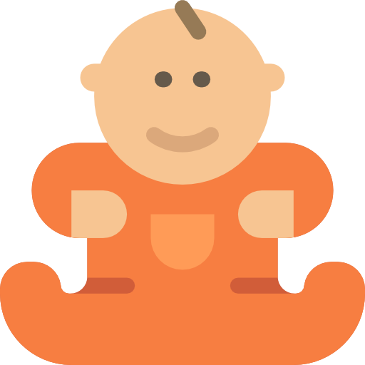

<link rel="import" href="app-theme.html" />
<dom-module id="summary-rings">
    <template>
        <style include="app-theme"></style>
        <style>
            :host {
                display: block;
                cursor: pointer;
            }
            .progress-circles {
                position: relative;
                width: 300px;
                height: 300px;
                margin: 20px auto;
            }
            progress-bubble {
                text-shadow: none;
                position: absolute;
                top: 0;
                left: 0;
                width: 100%;
                height: 100%;
                margin: 0;
                color: #004d3f;
                font-weight: bold;
                font-size: 14px;

                --progress-bubble-stroke-color: #06c2a5;
                --progress-bubble-bg-stroke-color: #eff8f8;
                --progress-bubble-background: transparent;
                --progress-bubble-reflection-display: none;
                --progress-bubble-transition-duration: 1000ms;
            }
            progress-bubble:nth-child(2) {
                width: calc(100% - 70px);
                height: calc(100% - 70px);
                top: 50%;
                left: 50%;
                margin-top: calc((100% - 70px) / -2);
                margin-left: calc((100% - 70px) / -2);
                --progress-bubble-transition-duration: 750ms;
            }
            progress-bubble:nth-child(3) {
                width: calc(100% - 2 * 70px);
                height: calc(100% - 2 * 70px);
                top: 50%;
                left: 50%;
                margin-top: calc((100% - 2 * 70px) / -2);
                margin-left: calc((100% - 2 * 70px) / -2);
                --progress-bubble-transition-duration: 500ms;
            }
            .content {
                background: var(--text-primary-color);
                color: #fff;
                border-radius: 50%;
                width: 90px;
                height: 90px;
                position: absolute;
                top: 50%;
                left: 50%;
                margin-top: -45px;
                margin-left: -45px;
            }
            .content {
                font-weight: bold;
                font-size: 24px;
            }
            .content small {
                font-weight: 100;
                font-size: 18px;
            }
            .centre-ring img {
                display: block;
                top: -5px;
                position: relative;
            }
        </style>
        <div class="progress-circles">
            <template is="dom-repeat" items="[[summaryRows]]">
                <progress-bubble class="animation-off" stroke-width="35" max="100" value="[[_limit(item.value)]]">
                    <iron-icon src="[[_iconUrl(item.sensor.name)]]"></iron-icon>
                    <span>[[item.sensor.name]]</span>
                    <span>[[item.value]]</span>
                    <span>[[item.unit]]</span>
                </progress-bubble>
            </template>
            <div class="layout vertical center-center content">
                <div class="centre-ring" on-tap="openPatientDialog">
                    
                </div>
                <!--<small>BABY</small>-->
                <!--<span id="odometer" class="odometer">[[_getTotal(summaryRows)]]</span>-->
            </div>
        </div>
    </template>

    <script>
        Polymer({
            is: 'summary-rings',

            properties: {
                summaryRows: Array
            },

            _limit: function(value) {
                return Math.min(100, value);
            },

            _iconUrl: function(sport) {
                return 'resources/sport-icons-invert/' + sport + '-75.png';
            },

            _getTotal: function(summaryRows) {
                var total = summaryRows.length * 100;
                var score = summaryRows.reduce(function(acc, row) { return acc + row.value }, 0);
                return Math.round(score / total * 100) + '%';
            }
        });
    </script>
</dom-module>
